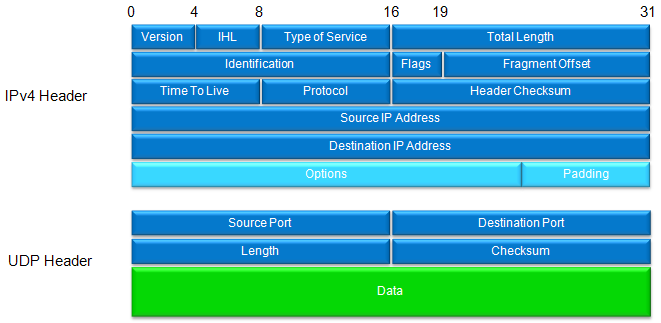

|
LTE Quick Reference Go Back To Index Home : www.sharetechnote.com |
|
|
ROHC (Robust Header Compression)
ROHC is a kind of algorithm to compress the header of various IP packets. In case of IPv4, the size of uncompressed IP header is 40 bytes and in case of IPv6, the size of uncompressed IP header is 60 bytes.
Only 40 bytes and 60 bytes ? It sounds pretty small. Why do these matters ? If it is ordinary packet application like file transfer or browsing, it would not be a big issue since the size of data being transferred would be very huge comparing to the size of header. So the overhead created by IP header would not be a big issue. But in some applications (e.g, VoIP, short message, gaming etc) the size of data being transferred tend to be small and they generate very frequent transactions, in this case overhead created by IP header gets very large. In this case, it would be huge benefit if we can come up with any method to reduce the size of IP header and ROHC is one of these method defined by RFC 3095. Ideal compression rate of ROHC is to reduce the size of header (40 or 60 bytes in original size) to only 1 or 2 bytes.
< Overall Logic of Header Compression >
Basic idea of this compression method is pretty simple which can be described as follows. i) At the start of a session (the initiation state), the transmitter and reciever sends the full size header without any compression. ii) From step i), both transmitter and reciever extract all the information from the header and store them. iii) After the initial transaction, the transmitter sends only those information that is different from the header information exchanged at the initial transaction. (Since a lot of information in the header would not change during the whole session, the size of changing part would become very small. So transmitting only the changing part would create the effect like data compression).
For example, let's take a look at IP/UDP header. It would look as follows.

Out of all these information included in the header, which part do you think would not change during the session ? My guess is as follows. i) Source IP Address ii) Destination IP Address iii) Version iv) IHL v) Type of Service vi) Source Port vii) Destination Port Simply removing these information would decrease the size of header in very large degree. Those engineers who never get satisfied wanted to go even further and they came up with a lot of additional ideas which can reduce the size of the changing part (e.g, Checksum etc) and the collection of all of these ideas were packaged into a single specification called ROHC.
< Component (State) of ROHC Statemachine >
ROHC has three main states as illustrated below. Try to correlate these states with the overall algorithm description that I mentioned above.
< ROHC Profiles >
There are four different ROHC Profiles defined in RFC 3095 as follows.
Profile 0 (ROHC Uncompressed) : Compresses packets, which cannot be compressed by any of the following profiles Profile 1 (ROHC RTP) : Compresses packets with IP/UDP/RTP protocol headers Profile 2 (ROHC UDP) : Compresses packets with IP/UDP protocol headers Profile 2 (ROHC ESP) : Compresses packets with IP/ESP protocol headers
< ROHC Modes >
The ROHC scheme has three modes of operation, called Unidirectional, Bidirectional Optimistic, and Bidirectional Reliable mode.
Which mode would be the best one in a certain situation depends on the characteristics of the environment of the compression protocol, such as feedback abilities,error probabilities and distributions, effects of header size variation, etc. All ROHC implementations MUST implement and support all three modes of operation.
For the details, I recommed the RFC 3095 or a good white paper at http://www.effnet.com/sites/effnet/pdf/uk/Whitepaper_Robust_Header_Compression.pdf
|